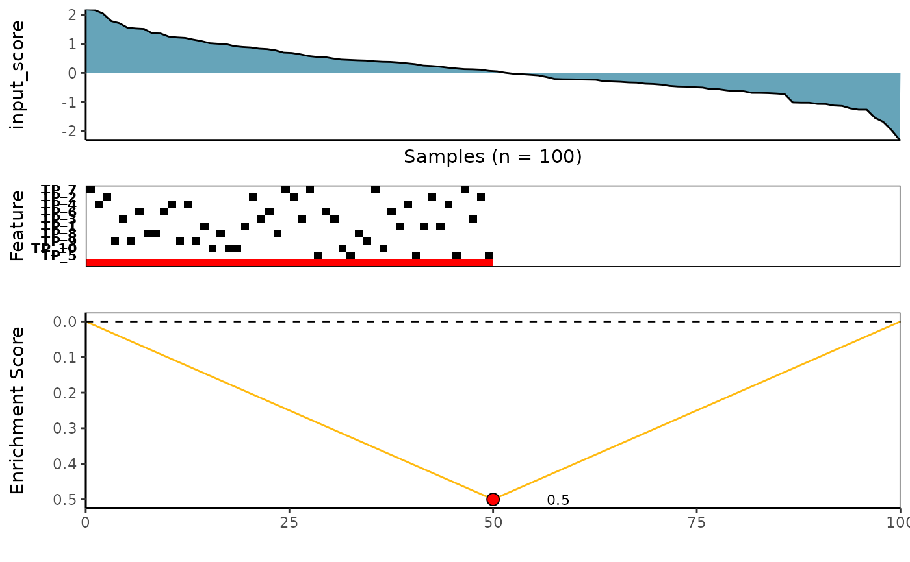
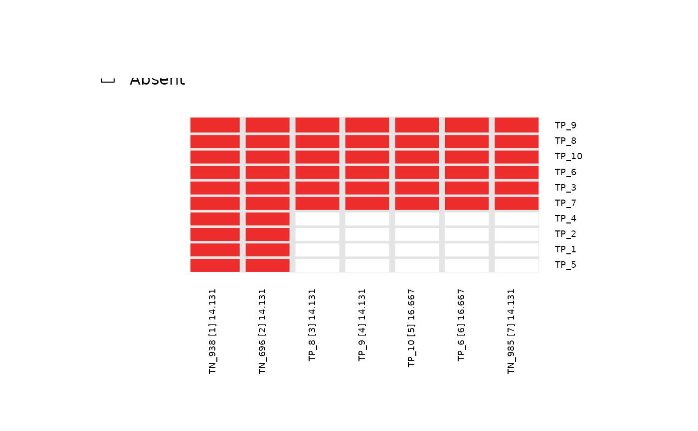

A list of objects returned from candidate_search() using simulated dataset
FS = sim_FS, input_score = sim_Scores, top_N = 7,
method = "ks", alternative = "less", metric = "pval",
search_method = "both", max_size = 10,
and best_score_only = FALSE as inputs to the function.
Note: max_size is set to 10 as we would like to account
for the presence of 10 left-skewed
(i.e. true positive or TP) features in the sim_FS dataset.
data(topn_list)A list of objects returned from candidate_search() function
containing a set of SummarizedExperiment objects, input_score, corresponding best score,
method and metric used for each top_N search.
See candidate_search for more information.
Over top_N = 7 feature searches, a list of SummarizedExperiment objects, input_score, along with its corresponding best score, method and metric are returned from each search.
Kartha VK, Kern JG, Sebastiani P, Zhang L, Varelas X, Monti S (2019) CaDrA: A computational framework for performing candidate driver analyses using binary genomic features. (Frontiers in Genetics)
# Load pre-computed Top-N list generated for sim_FS and sim_Scores dataset
data(topn_list)
# For N=1, The result is initiated with the top-scoring starting feature
topn_list[[1]]
#> $feature_set
#> class: SummarizedExperiment
#> dim: 10 100
#> metadata(3): experimentData annotation protocolData
#> assays(1): exprs
#> rownames(10): TN_716 TN_108 ... TN_620 TN_542
#> rowData names(2): Feature Type
#> colnames(100): 1 2 ... 99 100
#> colData names(0):
#>
#> $input_score
#> 1 2 3 4 5 6
#> 2.187332993 2.168955965 2.050084686 1.786913137 1.715064987 1.558708314
#> 7 8 9 10 11 12
#> 1.532610626 1.516470604 1.368602284 1.360652449 1.253814921 1.224081797
#> 13 14 15 16 17 18
#> 1.207961998 1.148807618 1.096839013 1.025571370 1.005738524 0.993503856
#> 19 20 21 22 23 24
#> 0.922267468 0.895125661 0.878133488 0.837787044 0.821581082 0.779965118
#> 25 26 27 28 29 30
#> 0.701355902 0.688640254 0.644376549 0.584613750 0.553917654 0.548396960
#> 31 32 33 34 35 36
#> 0.497850478 0.460916206 0.448209779 0.435181491 0.426464221 0.400771451
#> 37 38 39 40 41 42
#> 0.385280401 0.379639483 0.359813827 0.331781964 0.303528641 0.253318514
#> 43 44 45 46 47 48
#> 0.238731735 0.215941569 0.181303480 0.153373118 0.129287735 0.123854244
#> 49 50 51 52 53 54
#> 0.110682716 0.070508391 0.053004227 0.005764186 -0.028546755 -0.042870457
#> 55 56 57 58 59 60
#> -0.061911711 -0.083369066 -0.138891362 -0.207917278 -0.217974915 -0.220486562
#> 61 62 63 64 65 66
#> -0.225770986 -0.230177489 -0.235700359 -0.284773007 -0.295071483 -0.305962664
#> 67 68 69 70 71 72
#> -0.325931586 -0.333207384 -0.370660032 -0.380471001 -0.402884835 -0.445661970
#> 73 74 75 76 77 78
#> -0.466655354 -0.472791408 -0.491031166 -0.502323453 -0.555841135 -0.560475647
#> 79 80 81 82 83 84
#> -0.600259587 -0.625039268 -0.627906076 -0.686852852 -0.688008616 -0.694706979
#> 85 86 87 88 89 90
#> -0.709200763 -0.728891229 -1.018575383 -1.026004448 -1.026420900 -1.067823706
#> 91 92 93 94 95 96
#> -1.071791226 -1.123108583 -1.138136937 -1.220717712 -1.265061235 -1.265396352
#> 97 98 99 100
#> -1.548752804 -1.686693311 -1.966617157 -2.309168876
#>
#> $score
#> TN_716
#> 15.80393
#>
# Fetch the SummarizedExperiment object for the first-best feature
topn_list[[1]]$feature_set
#> class: SummarizedExperiment
#> dim: 10 100
#> metadata(3): experimentData annotation protocolData
#> assays(1): exprs
#> rownames(10): TN_716 TN_108 ... TN_620 TN_542
#> rowData names(2): Feature Type
#> colnames(100): 1 2 ... 99 100
#> colData names(0):
# Fetch the SummarizedExperiment object for the second-best feature
topn_list[[2]]$feature_set
#> class: SummarizedExperiment
#> dim: 10 100
#> metadata(3): experimentData annotation protocolData
#> assays(1): exprs
#> rownames(10): TP_8 TP_9 ... TN_275 TN_472
#> rowData names(2): Feature Type
#> colnames(100): 1 2 ... 99 100
#> colData names(0):
# Retrieve the result of best scores over top_N = 7 runs
topn_best_meta <- topn_best(topn_list = topn_list)
# Visualize the best meta-feature using meta_plot() function
meta_plot(topn_best_list = topn_best_meta)

# Visualize overlap of features across the top_N = 7 using topn_plot() function
topn_plot(topn_list = topn_list)
